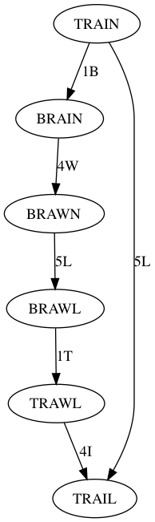

Project. Project link online (to Berkeley CS website Project 0). All in Python2.7. Implements an auto-grader.
Rules: have a start and end word. Need to find path of english words by changing one letter at a time.
Example.
$$ \text{TRAIN} \\ \text{BRAIN} \\ \text{BRAWN} \\ \text{PRAWN} $$
Can visualize this as a tree
Place \(n\) queens (from chess) on a \(n \times n\) board such that no queen can capture any other.
$$ \begin{array}{|c|c|c|c|} \hline & Q & & \\ \hline & & & Q \\ \hline Q & & & \\ \hline & & Q & \\ \hline \end{array} $$
Can imagine each possible arrangement as a state, and then there being a graph of states connected by transitions of queens in a unit directional translation. How can we turn this into a tree (acyclic)?